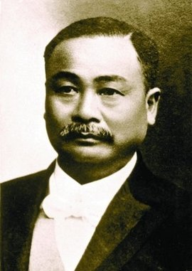

国内铁路先驱

詹天佑
中国近代铁路之父
中国近代著名铁路工程专家，京张铁路总工程师
詹天佑(1861-1919)是中国近代著名铁路工程专家。他主持修建了京张铁路，创造性地解决了多项技术难题，被誉为"中国近代铁路之父"。
了解更多

曹建猷
中国铁路电气化的开路先锋
中国科学院院士，"中国铁路电气化之父"
曹建猷 (1917-1997) 是中国铁路电气化专家，主持宝成铁路电气化制式选择，提出采用 25 千伏工频交流制，为中国高铁电气化奠定基础。该制式后成为国家标准，支撑中国高铁实现
350 公里 / 小时的世界领先速度，被誉为 "中国铁路电气化之父"。
了解更多
孙永福
中国高铁铁路工程专家
中国工程院院士，被誉为"中国高铁总设计师"
孙永福(1941-)是中国工程院院士，为中国高速铁路技术发展和工程建设做出卓越贡献，他主持完成了我国第一条高速铁路工程技术博标准体系的建立，被誉为"中国高铁总设计师"。
了解更多

刘友梅
中国电力机车之父
中国工程院院士，中车株洲电力机车研究所原所长，我国轨道交通装备技术主要奠基人之一
刘友梅(1938-)是中国工程院院士，长期从事轨道交通装备研发，主持研制了我国首台交流传动电力机车"韶山9型"，推动中国电力机车实现从直流到交流的技术跨越，被誉为"中国电力机车之父"。
了解更多

丁荣军
中国高铁牵引供电系统专家
中国工程院院士，轨道交通牵引电传动和网络控制专家
丁荣军(1961-)是中国工程院院士，在高速铁路牵引供电系统领域做出重大贡献，主持研发了我国高铁供电系统关键技术。
了解更多

陈应先
中国高铁拓荒者
全国勘察设计大师，铁四院原总工程师，推动京沪高铁等项目，编译《高速铁路》
陈应先 (1932-2021)
是中国高铁早期技术开拓者，编译中国首部《高速铁路》专著，提出长江高铁隧道越江方案，参与广深准高铁、京沪高铁等重大项目技术论证，为中国高铁技术体系构建和工程实践提供关键支撑。
了解更多